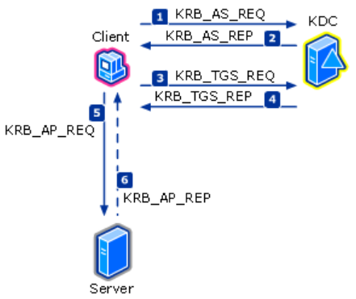

本記事はマイクロソフト社員によって公開されております。
こんにちは。Windows Commercial Support Directory Services チームです。
Active Directory 環境のセキュリティ強化において、長年の課題となっているのが「古い暗号化方式の排除」です。
特に Kerberos 認証における RC4 (RC4-HMAC, Rivest Cipher 4) の無効化は、攻撃者による悪用を防ぐために急務となっています。
Microsoft は将来的に、ドメイン コントローラーでの RC4 の既定使用を無効化する計画を発表しています。
本記事では、Kerberos における RC4 のリスク、現状の監査方法、そして AES へ安全に移行するための手順について解説します。
本記事は、弊チームのメンバーが LinkedIn に投稿した以下の記事をベースに、内容を整理・加筆したものです。
Kerberos 認証のセキュリティ強化：RC4 から AES への移行ガイド
1. Kerberos の紹介と RC4 脆弱性
Kerberos は、Active Directory の中核となる認証プロトコルです。ユーザーが一度認証を受けると、チケットを利用してネットワーク上のリソースへアクセスします。

Kerberos 認証の流れ
参考: How the Kerberos Version 5 Authentication Protocol Works
基本的な認証フロー
- AS-REQ/REP: クライアントが KDC（ドメイン コントローラー）に認証を要求し、TGT（Ticket Granting Ticket）を取得します。
- TGS-REQ/REP: クライアントが TGT を提示して、特定のリソース サーバーへのアクセスに必要なサービス チケットを取得します。
- AP-REQ/REP: 取得したサービス チケットを使って、ファイル サーバーや SQL サーバーなどのリソースにアクセスします。
なぜ RC4 から AES へ移行する必要があるのか
Windows Kerberos における RC4 は Windows 2000 時代に導入されましたが、現代の計算能力から見ると脆弱性が顕著です。特に Kerberoasting 攻撃 や AS-REP Roasting 攻撃 の標的となりやすく、パスワードが特定されるリスクが高まっています。
- ソルトの欠如: RC4 はパスワードを暗号化キーに変換する際、ソルト（Salt）を使用せず、パスワードの NTLM ハッシュをそのままキーとして使用します。
- 計算速度: パスワードを守るハッシュ関数の計算が 1 回しか行われないため、攻撃者は非常に高速に総当たり攻撃（ブルート フォース）を行うことが可能です。
2. Kerberos における暗号方式既定値変更 （CVE-2022-37966 / CVE‑2026‑20833）
Windows Server 2008 / Vista 以降の Windows OS では、より強固な AES 暗号化 (AES-SHA1) をサポートしています。Microsoft は RC4 から AES への移行を段階的に進めています。
本章では、その背景にある「Microsoft 側で進められている既定動作の変更」について、2 つのセキュリティ更新プログラムを軸に整理します。
Kerberos 認証では、1 回の認証の中で複数の鍵・チケットが暗号化されます。
RC4 から AES への移行は一度に行われたわけではなく、暗号化の対象ごとに段階的に既定値が変更されてきました。
補足: これらはいずれも “既定値” の変更です。
レジストリやmsDS-SupportedEncryptionTypes属性で RC4 を明示的に指定している場合は、更新適用後も引き続き RC4 が使用されます（詳細は本章末尾「RC4 が継続利用される条件」を参照）。
2-1. CVE-2022-37966 — セッション キーの既定値変更
2022 年 11 月のセキュリティ更新プログラム（CVE‑2022‑37966）では、Kerberos 認証における セッション キーの暗号化方式 の既定値が変更されました。
変更対象
- Kerberos のセッション キー
変更内容
msDS-SupportedEncryptionTypes 属性が未設定、または 0 (既定の暗号化タイプが未指定) のアカウントに対して、以下のように動作が変更されます。
- 従来：サービス チケットのセッション キーは RC4 で暗号化される
- 更新後：AES が既定で利用される動作へ変更
具体的にはドメイン コントローラーの DefaultDomainSupportedEncTypes の既定値 0x27 が利用され、セッションキー用途に AES が既定候補として追加されています。
ポイント
この変更は、
「暗号種別未定義アカウントのセッションキーの既定値を RC4 から AES へ変更する」
というものです。
詳細は CVE-2022-37966 への対応とその影響について をご確認ください。
2-2. CVE-2026-20833 — サービス チケットの既定値変更
2026 年の更新（CVE‑2026‑20833）では、さらに RC4 廃止が推進され、Kerberos の サービス チケット暗号化方式 の既定値が変更されました。
変更対象
- Kerberos のサービス チケット
変更内容
msDS-SupportedEncryptionTypes 属性が未設定、または 0 (既定の暗号化タイプが未指定) のアカウントに対して、以下のように動作が変更されます。
- 従来：サービス チケットは RC4 で暗号化される
- 更新後：AES が既定で利用される動作へ変更
具体的にはドメイン コントローラーの DefaultDomainSupportedEncTypes の既定値 0x18 が利用され、サービス チケットの既定の暗号化方式が AES に変更されました。
ポイント
この変更は、
「サービス チケット発行時の既定暗号方式を RC4 から AES のみに変更する」
というものです。
RC4 が継続利用される条件
以下のようなケースでは、更新適用後も RC4 は継続利用されます。
msDS-SupportedEncryptionTypesに RC4 が明示的に設定されている場合- レジストリやポリシーで RC4 を明示的に許可している場合
この場合、KDC は明示設定を優先するため、自動的に AES へ切り替わることはありません。
詳細は CVE‑2026‑20833 への対応とその影響について [KB5073381] をご確認ください。
3. イベント ログによる暗号化タイプの監査 (ID: 4768, 4769)
環境内で RC4 が「どこで」「誰によって」使用されているかを特定するには、ドメイン コントローラーのセキュリティ イベント ログを監査します。
監視対象イベント
- イベント ID 4768: Kerberos 認証チケット (TGT) の要求
- イベント ID 4769: Kerberos サービス チケットの要求
補足 1: ドメイン コントローラーに 2025 年 1 月以降の更新プログラムを適用することで、これらの ID:4768, 4769 イベントには詳細な暗号化情報が記録されるようになりました。監査の前に更新プログラムの確認や適用をお願いします。
補足 2: ID:4768/4769 はチケット要求時に記録され、失敗時も記録されるためトラブルシューティングに有用です。ただし、事前認証（Pre-authentication）段階で失敗した場合は、代わりに ID:4771 が記録されることがあります。
3-1. ID: 4768 (TGT 要求) の監査ポイント
TGT を正常に発行するには、「ユーザー アカウントのキー（User Key）」「クライアント端末のサポート暗号（Advertized Etypes）」「KDC の許可暗号 (GPO や Krbtgt キーなど）」の 3 者間で共通の暗号化タイプが必要です。なお、TGT 本体の暗号化は krbtgt アカウントのキーのみに依存します（クライアントは TGT 本体を復号しないため）。
1 | Log Name: Security |
確認項目
Account Information: TGT を要求しているアカウント名です。末尾に $ がある場合はコンピューター アカウントです。
Available Keys (重要): AD に保存されている、そのアカウントで利用可能なキーの一覧です。ここに AES-SHA1 が表示されない場合、そのアカウントは AES キーを持っていません。
- 対処法: ドメイン機能レベルが 2008 以上であることを確認し、該当アカウントのパスワード変更（リセット） を実施してください。古いパスワードのままのアカウントは AES キーが生成されていないため、RC4 が使われ続けます。
補足:
msDS-SupportedEncryptionTypes(msDS-SET) 属性は、AD がそのアカウントに対して「利用可能（サポート）」と認識している暗号化タイプを示す属性です。SPN を持たない通常のユーザー アカウントでは、
msDS-SupportedEncryptionTypes属性を設定する必要はありません。ユーザー アカウントの User Key は認証に使用されますが、この属性はチケット暗号化タイプの計算に影響しません。そのため属性値は既定で空欄となっており、2022 年 11 月更新 (CVE-2022-37966) 適用後のドメイン コントローラーでは
DefaultDomainSupportedEncTypes（既定値0x27）が適用されます。なお、その後の CVE-2026-20833 への対応により、この
DefaultDomainSupportedEncTypesの既定値はさらに0x18（AES のみ）へ変更されます。
Service Information:
TGT は Krbtgt アカウントのパスワード ハッシュで暗号化されるため、このフィールドには Krbtgt が表示されます。もし Available Keys に AES がない場合も、同様にドメイン機能レベルは 2008 以上であることを確認のうえ、Krbtgt アカウントのパスワード変更/リセットを一度実施してください。（手順：イベント メッセージ ID 42 への対処方法について）
Domain Controller Information:
ドメイン コントローラーに関する情報です。
msDS-SupportedEncryptionTypes: AES が表示されない場合は、ドメイン コントローラーに適用されている、ネットワーク セキュリティ: Kerberos で許可する暗号化の種類を構成する（Network security: Configure encryption types allowed for Kerberos） グループ ポリシーの設定を確認します。- ※ポリシーの設定値は、再起動後に
msDS-SupportedEncryptionTypes属性に反映されます。
- ※ポリシーの設定値は、再起動後に
- 通常は発生しませんが、
msDS-SupportedEncryptionTypes属性が空欄の場合のみ、ドメイン コントローラー側のDefaultDomainSupportedEncTypesレジストリ値を確認します。- ※他にも、DC で使用される暗号化タイプに影響を与えるレジストリは複数存在します。
Network Information:
TGT を要求したクライアント端末の情報です。
- Advertized Etypes: クライアントが申告した「サポート可能な暗号化タイプ」です。ここに AES がない場合、クライアント OS が古い（Windows Server 2003 以前など）か、古い NAS などの可能性があります。
- また、Windows OS の場合は、該当コンピューターに適用されている、ネットワーク セキュリティ: Kerberos で許可する暗号化の種類を構成する グループ ポリシーの設定を確認します。
- ※ポリシーの設定値は、再起動後に
msDS-SupportedEncryptionTypes属性に反映されます。
- ※ポリシーの設定値は、再起動後に
- 通常は発生しませんが、
msDS-SupportedEncryptionTypes属性が空欄の場合のみ、ドメイン コントローラー側のDefaultDomainSupportedEncTypesレジストリ値を確認します。
補足: Windows デバイスについては、AES-SHA1 をサポートしていなかった最後のバージョンは Windows Server 2003 です。
Additional Information:
Result Codeは0x0以外であればエラーが発生しています。Ticket Encryption Type: TGT の暗号化タイプSession Encryption Type: TGS セッション キーの暗号化タイプPre-Authentication EncryptionType: Pre-Auth（Authenticator）の暗号化タイプ- 暗号化タイプの詳細はこちら（Auditing for encryption type）
3-2. ID: 4769 (サービス チケット要求) の監査ポイント
サービス チケットを正常に発行・利用するためには、「サービス アカウントが持つ Service Key の暗号化タイプ（msDS-SupportedEncryptionTypes）」、「クライアント端末のサポート暗号（Advertized Etypes）」「KDC の許可暗号 (GPO や Krbtgt キーなど）」の 3 者間で共通の暗号化タイプが必要です。
サービス チケット本体の暗号化方式は、サービス アカウントが持つ Service Key によってのみ決まります。（Service Key の暗号タイプは msDS-SupportedEncryptionTypes によって決めます。）クライアントはサービス チケット本体を復号しないため、クライアントとの共通暗号が影響するのは、TGS-REP のセッション キーの暗号方式のみです。
1 | Log Name: Security |
確認項目
Service Information:
アクセス先のサービス（SPN）の情報です。（厳密には、SPN が登録しているオブジェクトです）
msDS-SupportedEncryptionTypes:- ユーザーや gMSA アカウントで AES が表示されない場合、まず AD 側でアカウントの属性値を確認します。設定がない（空欄）の場合、DC のレジストリ
DefaultDomainSupportedEncTypesの値に従います。2022/11 更新 (CVE-2022-37966) 適用後のドメイン コントローラーではDefaultDomainSupportedEncTypes（既定値0x27）が適用されます。なお、その後の CVE-2026-20833 への対応により、このDefaultDomainSupportedEncTypesの既定値はさらに0x18（AES のみ）へ変更されます。 - メンバー コンピューターで AES が表示されない場合は、コンピューターに適用されている、ネットワーク セキュリティ: Kerberos で許可する暗号化の種類を構成する グループ ポリシーの設定を確認します。
- ※ポリシーの設定値は、再起動後に
msDS-SupportedEncryptionTypes属性に反映されます。
- ※ポリシーの設定値は、再起動後に
- 通常は発生しませんが、
msDS-SupportedEncryptionTypes属性が空欄の場合のみ、ドメイン コントローラー側のDefaultDomainSupportedEncTypesレジストリ値を確認します。 - ドメイン コントローラーに AES が表示されない場合は、上記の ID:4768 Domain Controller Information の記載をご参照ください。
- ユーザーや gMSA アカウントで AES が表示されない場合、まず AD 側でアカウントの属性値を確認します。設定がない（空欄）の場合、DC のレジストリ
補足: 信頼（Trust Domain Object）に AES が表示されない場合は、まずオブジェクトの
msDS-SupportedEncryptionTypes属性を確認してみてください。
Domain Controller Information / Network Information:
こちらも確認する必要がありますが、考え方は上記 ID:4768 と同じです。
Additional Information:
Ticket Encryption Type: サービス チケットに対して KDC が選択した暗号化方式です。対象サービス アカウントのmsDS-SupportedEncryptionTypesに値が設定されていない場合、暗号化方式は既定で RC4 が使用されます。Session Encryption Type: 2022 年 11 月の更新以降、クライアント側が AES をサポートしていることを KDC に通知している場合、セッション キーの暗号化方式は既定で AES が使用されるようになりました。（「2-1. CVE-2022-37966 — セッション キーの既定変更」にてお伝えした内容です。この制御は、DefaultDomainSupportedEncTypesレジストリにより実現しています。）
3-3. ドメイン内での RC4 利用有無を判断するために最低限確認すべきポイント
各イベントログには様々な情報が記録されますが、端的にドメイン環境において Kerberos 認証で RC4 の利用を判断するには、各イベントの以下のフィールドを確認します。
これらのフィールドのいずれかに RC4 を示す 0x17 または 0x18 が記録されている場合、当該認証要求において RC4 が利用されていることを意味します。
ID:4768 (TGT 要求) で確認するフィールド
Ticket Encryption TypeSession Encryption TypePre-Authentication EncryptionType
ID:4769 (サービス チケット要求) で確認するフィールド
Ticket Encryption TypeSession Encryption Type
RC4 の無効化を最終的なゴールとされる場合は、上記のすべてのフィールドが AES を示す値（0x11 または 0x12）で記録される状態とする必要があります。
参考:各暗号化タイプの etype 値と説明
各暗号化タイプの etype 値と意味は以下の通りです。
| Type | Type Name | Description |
|---|---|---|
| 0x1 | DES-CBC-CRC | Disabled by default starting from Windows 7 and Windows Server 2008 R2. |
| 0x3 | DES-CBC-MD5 | Disabled by default starting from Windows 7 and Windows Server 2008 R2. |
| 0x11 | AES128-CTS-HMAC-SHA1-96 | Supported starting from Windows Server 2008 and Windows Vista. |
| 0x12 | AES256-CTS-HMAC-SHA1-96 | Supported starting from Windows Server 2008 and Windows Vista. |
| 0x17 | RC4-HMAC | Default suite for operating systems before Windows Server 2008 and Windows Vista. |
| 0x18 | RC4-HMAC-EXP | Default suite for operating systems before Windows Server 2008 and Windows Vista. |
補足 1: DES（
0x1/0x3）は現在サポートされている OS では既定で無効化されているため、通常イベントに記録されることはありません。万一記録されている場合は、当該認証要求において DES が利用されていることを意味しますので、AES 化を進められる際には、これらの認証についても併せて AES への移行をご検討ください。
補足 2: 本表のような etype 値（単一の暗号化方式を表す番号） としての0x18は RC4-HMAC-EXP を指します。一方、msDS-SupportedEncryptionTypesやDefaultDomainSupportedEncTypesで使う0x18は ビットフラグの合算値（0x8AES128 +0x10AES256）であり、「AES のみ」を意味します。両者は別の体系の値である点にご注意ください。同じ0x18でも文脈で意味が異なります。
3-4. AES への対応方法について
ID: 4768 / 4769 のイベント ログを監査するだけで対応を進めることも可能ですが、まずは 「2. Kerberos における暗号方式既定値変更 （CVE-2022-37966 / CVE‑2026‑20833）」に記載の内容を進めていただくことを強くお勧めいたします。
脆弱性対応の手順に沿って対応を進めることで、段階的かつ安全に、もれなく AES への移行を進めることができます。
一方、脆弱性対応を進めるだけでは、すべての認証要求で AES になるわけではありません。脆弱性対応が完了した後に、個別に ID: 4768 / 4769 のイベント ログを確認し、RC4 が利用されている認証要求に対して対応を行います。
ID:4768 (TGT 要求) の場合
Ticket Encryption Type で RC4 が記録されている場合
以下の可能性があります。
Krbtgt アカウントのパスワードが長期間更新されておらず、AES 鍵が AD 上に保持されていない
ドメイン コントローラーに適用された GPO（ネットワーク セキュリティ: Kerberos で許可する暗号化の種類を構成する）で AES が許可されていない
クライアントが AES を通知していない（=Network Information のクライアントが RC4 のみを通知している）
必要に応じて Krbtgt アカウントのパスワード更新による AES 鍵の生成を行います。手順は イベント メッセージ ID 42 への対処方法について をご参照ください。Krbtgt 側に問題がない場合は、Network Information に記載されているクライアントの AES 対応状況を確認します。
Session Encryption Type で RC4 が記録されている場合
本フィールドで RC4 が記録される場合、Network Information に記載されているクライアントが AES を通知できていない可能性が高いと考えられます。
クライアントの OS バージョンや、当該コンピューターに適用されている ネットワーク セキュリティ: Kerberos で許可する暗号化の種類を構成する グループ ポリシーの設定を確認し、必要に応じてクライアント側で AES を通知できるよう対応します。
Pre-Authentication EncryptionType で RC4 が記録されている場合
本フィールドで RC4 が記録される場合、Account Information に記載されている認証アカウントが AES の長期鍵を AD 上に保持しておらず、RC4 鍵のみが利用可能である可能性が高いと考えられます。
該当する代表的なケースは、ドメイン機能レベルが Windows Server 2008 未満であった時代に作成され、その後パスワードが更新されていないアカウントです。当該アカウントのパスワード更新を実施し、AES 鍵を AD 上に生成してください。
ID:4769 (サービス チケット要求) の場合
Ticket Encryption Type で RC4 が記録されている場合
以下の可能性があります。
サービス アカウントの
msDS-SupportedEncryptionTypesに AES が含まれていないサービス アカウントが AES の長期鍵を AD 上に保持していない（RC4 鍵のみ）
対応としては、当該サービス アカウントのパスワード更新による AES 鍵の生成、もしくは
msDS-SupportedEncryptionTypesに AES を含む値（AES に限定する場合は AES のみの値）への設定変更を実施します。なお、同じ ID:4769 イベント内の Service Information の
Available Keys（サービス アカウントが実保持する鍵の etype 一覧）と Service Information のMSDS-SupportedEncryptionTypesを併用することで、必要な対処を判別できます。Service Information の
Available Keysに AES が含まれない場合 → 当該アカウントのパスワード更新による AES 鍵の生成Service Information の
Available Keysに AES が含まれるが Service Information のMSDS-SupportedEncryptionTypesに AES が含まれない場合 →msDS-SupportedEncryptionTypesに AES を含む値への設定変更補足: ドメイン機能レベルが Windows Server 2003 以前の時代に作成されたアカウントについては、1 回のパスワード更新では AES 鍵が利用可能な状態にならず、2 回以上のパスワード更新が必要となるケースがあります。
Session Encryption Type で RC4 が記録されている場合
本フィールドで RC4 が記録される場合、Network Information に記載されているクライアントが AES を通知できていない可能性が高いと考えられます。
クライアントの OS バージョンや、当該コンピューターに適用されている ネットワーク セキュリティ: Kerberos で許可する暗号化の種類を構成する グループ ポリシーの設定を確認し、必要に応じてクライアント側で AES を通知できるよう対応します。
3-5. サード パーティ製品については、イベント ログだけでなくベンダーへの確認も推奨
イベント ログからは「クライアント ↔ KDC 間で RC4 が利用されているか」までは判断できますが、「アクセス先が AES に対応しているか」は別観点での確認が必要です。もしクライアントやサービス アカウントを利用しているのがサード パーティ製品である場合は、AES のサポート状況や移行可否について、製品ベンダーへ個別にお問い合わせいただくことを推奨いたします。
なお、ここでいう「サード パーティ製品」とは、サード パーティ OS や機器に限らず、Windows 上で動作する製品であっても Kerberos 認証の実装が Windows 標準実装と異なる可能性のある製品全般を指します。 具体例としては、NAS や独自実装のサーバー アプリケーションなどが該当します。
ID:4768 / 4769 のイベント ログから把握できるのは、クライアントとドメイン コントローラー（KDC）間でやり取りされる AS / TGS 段階の暗号化タイプに限られます。
クライアントがサービスへ AP-REQ を送信する段階（下図 (5)）はドメイン コントローラーを経由しないため、ドメイン コントローラー側のイベント ログでは捕捉できません。
1 | [クライアント] --- AS-REQ (1) ---> [KDC] ← イベント 4768 が記録される段階 |
そのため、ドメイン コントローラー側で管理しているサービス アカウントの暗号化タイプ対応状況と、実際にサービス（サーバー側のアプリケーション）が受け入れ可能な暗号化タイプとが乖離するケースが存在します。
たとえば、サービス アカウント自体は AES 鍵を保持していても、サービス アプリケーションの実装上 RC4 のみを受け入れる、といった状況が代表的な例として挙げられます。
3-6. 効率的な監査方法
イベント ビューアーでの目視確認は手間がかかると感じられる場合は、XML フィルターを利用して、「ドメイン内での RC4 利用有無を判断するために最低限確認すべきポイント」でご紹介したフィールド（ID:4768 の Ticket Encryption Type / Session Encryption Type / Pre-Authentication EncryptionType、ID:4769 の Ticket Encryption Type / Session Encryption Type）のいずれかに RC4 を示す 0x17 または 0x18 が記録されているイベントを抽出することが可能です。
1 | <QueryList> |
補足:
Pre-Authentication EncryptionTypeは ID:4768 のみに存在する項目です。そのため、クエリ内のPreAuthEncryptionType条件は ID:4769 のイベントでは単に成立せず、フィルターの動作には影響しません。
より多くの便利な方法を確認されたい方はこちらへ：So, you think you’re ready for enforcing AES for Kerberos? | Microsoft Community Hub
または、Microsoft’s Kerberos-Crypto GitHub repository にて公開しているスクリプトを活用します。こちらは 3-7 節で説明します。
3-7. Kerberos-Crypto スクリプトの活用
microsoft/Kerberos-Crypto リポジトリでは、4768 / 4769 のイベント ログを解析するための 2 つのPowerShell スクリプトが、オープン ソース として公開されています。「2025 年 1 月以降の更新適用済みのドメイン コントローラー」であれば、そのまま利用することが可能です。
| スクリプト | 対象 | 主な用途 |
|---|---|---|
List-AccountKeys.ps1 |
アカウント単位 | アカウントごとに観測された Kerberos キー (long-term key) の暗号化タイプを一覧化 |
Get-KerbEncryptionUsage.ps1 |
リクエスト単位 | AS-REQ / TGS-REQ ごとに、チケットとセッション キーの etype を一覧化 |
*スクリプトは継続的に更新されています。リポジトリの scripts/ ディレクトリ から都度最新版をご利用ください。
List-AccountKeys.ps1 — アカウントで使用可能な暗号化キーを列挙する
このスクリプトを利用することで直近期間 (既定: 30 日) の 4768 / 4769 を集計し、アカウントごとに保持・利用されているキーの etype を一覧化することが可能です。「AES キーを持たないアカウントの洗い出し」 を目的とする場合に有用な方法となります。
1 | # 過去 60 日で RC4 のキーがまだ観測されているアカウントのみを抽出 |
出力例:
1 | Time Name Type Keys |
Keys 列の表示は、処理済み (processed) 値 です。Windows Server 2022 以前では、アカウントの実際の設定に関わらず RC4 が常に表示されます。「表示されていること」 = 「実際に使用された」ではない 点にご注意ください。実利用の特定には次の Get-KerbEncryptionUsage.ps1 を使います。
Get-KerbEncryptionUsage.ps1 — 使用中の Kerberos 暗号化の種類を識別し、RC4 などの特定のアルゴリズムの使用を抽出する
このスクリプトを利用することで 4768 / 4769 をリクエスト単位で抽出し、チケットの etype とセッション キーの etype をそれぞれ表示することが可能です。「実際に RC4 を要求しているクライアントの特定」 を目的とした場合に有用な方法となります。
また、このスクリプトでは以下のような引数を指定することができ、特定の etype を要求しているリクエストのみを抽出するといったようなことも可能です。
| 主な引数 | 既定 | 用途 |
|---|---|---|
-Encryption |
All |
抽出対象の etype (RC4 / AES-SHA1 / AES128-SHA96 / AES256-SHA96 など) |
-EncryptionUsage |
Either |
Ticket / SessionKey / Either / Both |
-SearchScope |
This |
This (ローカル KDC) / AllKdcs (ドメイン内全 DC) |
1 | # チケットの etype が RC4 のリクエストのみを抽出する場合の実行例 |
出力例 (既定の Format-List 形式):
1 | Time : 1/21/2025 2:00:10 PM |
Sourceは要求元アカウント、Targetはチケットの宛先 (SPN またはkrbtgt)。Ticketがリソース側 (= ターゲット アカウント) のキー、SessionKeyは要求元アカウントのキーに対応します。Ticketが RC4 のリクエストが残っている場合、対象 SPN のmsDS-SupportedEncryptionTypes(またはドメインのDefaultDomainSupportedEncTypes) の見直し対象となります。
ご利用にあたっての注意事項 (サポート対応について)
本セクションでご紹介する 2 つのスクリプトは、microsoft/Kerberos-Crypto リポジトリでオープン ソース として公開されているスクリプトであり、リポジトリの SUPPORT.md に明記のとおり、サポート対象外となりお客様ご自身の責任で事前に十分な検証のうえご利用いただく必要があります。
もし、スクリプト自体に関する機能要望やご質問がある場合には GitHub Issues にてお知らせください。今後のスクリプトの改善に役立てさせていただきます。
4. RC4 を無効化する方法
監査により RC4 利用箇所を特定し、対処が完了した後、RC4 を無効化します。
4-1. コンピューター オブジェクトに対して GPO 設定
- パス: コンピューターの構成 > ポリシー > Windows の設定 > セキュリティの設定 > ローカル ポリシー > セキュリティ オプション
- ポリシー名: 「ネットワーク セキュリティ: Kerberos で許可される暗号化の種類を構成する」 (Network security: Configure encryption types allowed for Kerberos)
- 設定:
RC4_HMAC_MD5のチェックを外し、AES128_HMAC_SHA1とAES256_HMAC_SHA1のみを有効にします。
4-2. レジストリによるドメイン全体の既定値変更
ドメイン コントローラー上で以下のレジストリを設定することで、ドメイン全体で RC4 を無効化可能です（影響が大きいため、十分な検証後に実施してください）。
- キー:
HKEY_LOCAL_MACHINE\System\CurrentControlSet\services\KDC - 値:
DefaultDomainSupportedEncTypes - データ:
0x18(AES128 + AES256 のみ許可)
4-3. msDS-SupportedEncryptionTypes を設定しているアカウントの設定変更
上記の DefaultDomainSupportedEncTypes レジストリは msDS-SupportedEncryptionTypes を設定していないアカウントに対して有効です。
既定でユーザー アカウントに対して msDS-SupportedEncryptionTypes は設定していませんが、サービス アカウントなどで msDS-SupportedEncryptionTypes を手動で設定している場合は、個別に AES のみサポートするように変更します。（AES のみ：0x18）
5. 参考文献
環境内の Kerberos 認証における RC4 の無効化は大きなプロジェクトであり、段階を踏んで慎重に進める必要があります。
また、Kerberos 認証で利用されるチケットの暗号化タイプは、さまざまな要素によって決定されるほか、チケット自体も複数種類存在するため、全体像を完全に把握するのは容易ではありません。
そこで、本ブログを作成するにあたり参照した技術情報を、種類ごとに整理して共有いたします。少しでも皆さまの理解や検討の助けになれば幸いです。
Kerberos 認証フローについて
- [MS-KILE]: Kerberos Network Authentication Service (V5) Synopsis | Microsoft Learn
- Kerberos Authentication flow | Microsoft Community Hub
Kerberos 暗号化タイプについて
- Decrypting the Selection of Supported Kerberos Encryption Types | Microsoft Community Hub
- Encryption Type Selection in Kerberos Exchanges | Microsoft Learn
- [MS-KILE]: Supported Encryption Types Bit Flags | Microsoft Learn
Kerberos 認証 RC4 無効化のガイダンスや注意事項
- Detect and Remediate RC4 Usage in Kerberos | Microsoft Learn
- Decrypting the Selection of Supported Kerberos Encryption Types | Microsoft Community Hub
更新履歴
2026/07/03 : 本ブログの公開
2026/07/06 : 表記の微修正。公開日付の修正。